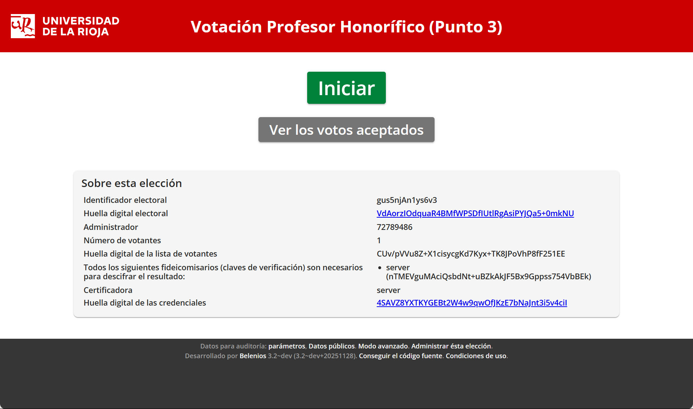

Semana del 12/10/2026
Procedimiento Certificado Académico Oficial
Actualización de los certificados que se pueden pedir de Doctorado. Parametrización con ayuda de Posgrado.
Registro de Convenios
En desarrollo: fechas de justificación, y adjuntos
Campeonatos de España Universitarios
En desarrollo:
- Estudiantes: Solicitud, comisión de servicios, liquidaciones.
- Deportes: Tramitación
- Vicerrectora: Firma
- Secretaría General: emisión certificados
Procedimiento de firma de actas
OCU informa (gracias Charo) que la aplicación de calificación de actas se migra a APEX. Después de varias idas y vueltas con OCU, en principio no se espera ningún impacto en el procedimiento de firma de actas.
Integración Blackboard con SIR2
Atención a Luismi para ayudarle a cumplimentar el formulario a enviar a RedIRIS. Parece que ha ido bien porque ya se ve el botón en Blackboard.
Voto Electrónico
Hasta ahora el planteamiento era empezar con votaciones "pequeñas" para coger tracción y confianza en el voto electrónico. Y cuando se avanzase, poder pasar a contratar el producto para votaciones "más grandes". De ahí que para empezar, después de explorar alternativas, en 2025 opté por Belenios.

Se trata de una solución de código abierto, con la que no incurrimos en gasto, más allá del tiempo para desplegarlo en nuestra infraestructura.
Estos días hemos venido comentando que lo ideal sería contar con el mismo producto desde el principio y poder aplicarlo por igual a todo tipo de votaciones. Con este planteamiento, las opciones se reducen a una: Sequent. Esto es debido a que fruto de diversas comunicaciones con la empresa, y por sus ganas de poder introducirse en el mercado de universidades, nos ofrecen (navidad de 2025) el acceso a su producto para poderlo instalar por nuestra cuenta.
En desarollo para desplegar este producto y pivotar de Belenios a Sequent.